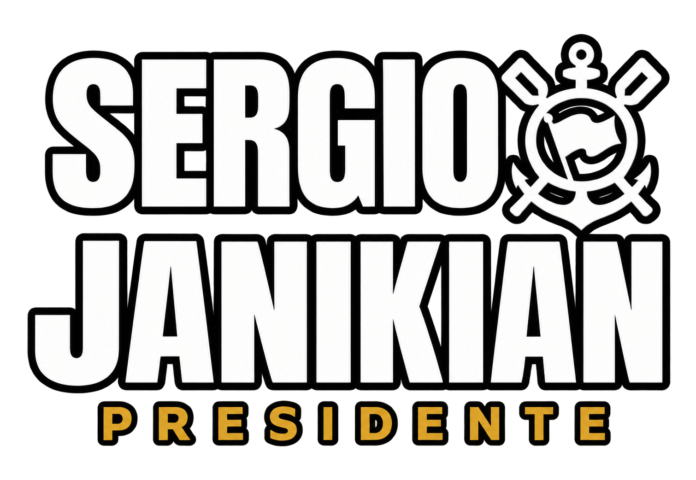
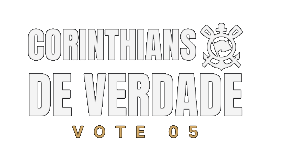
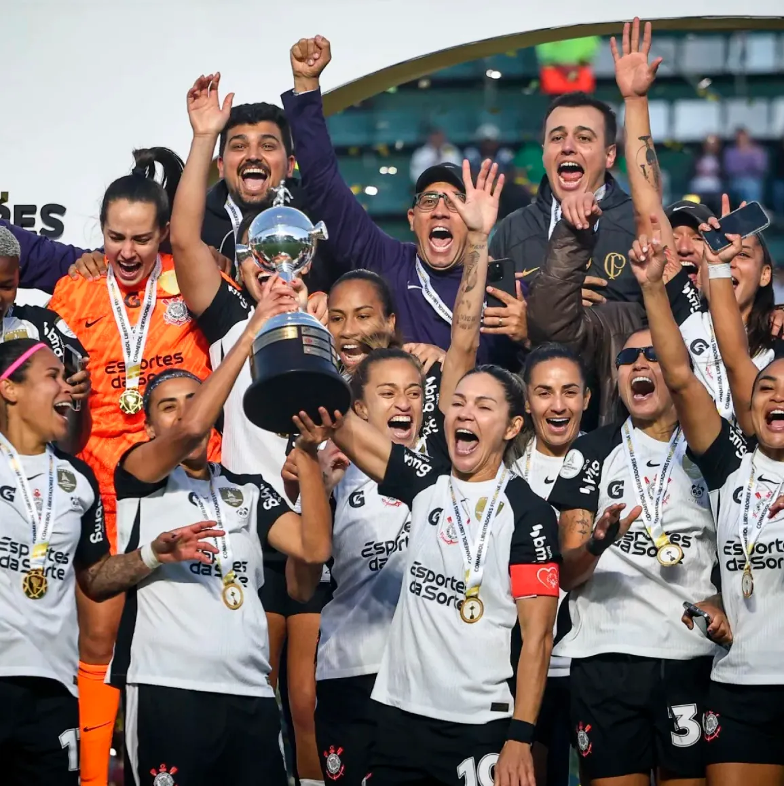
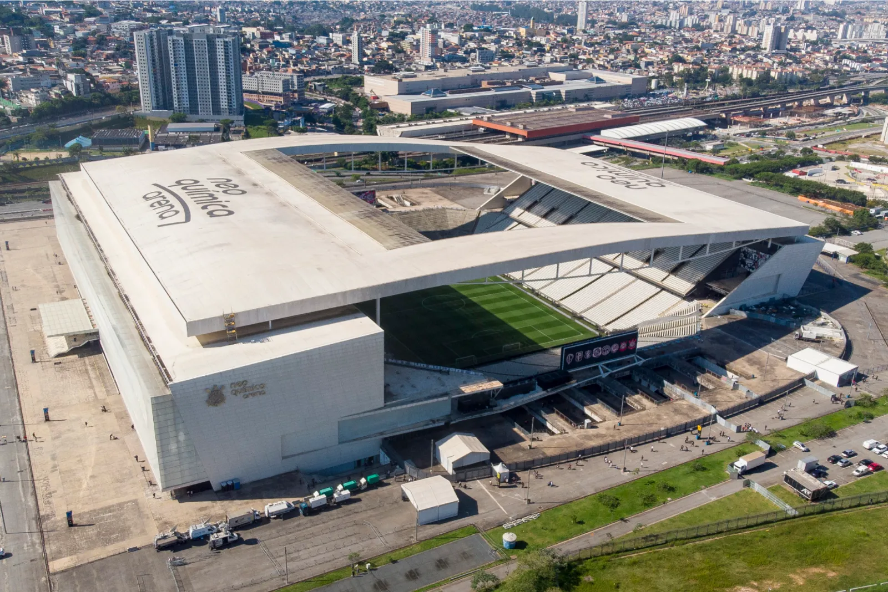
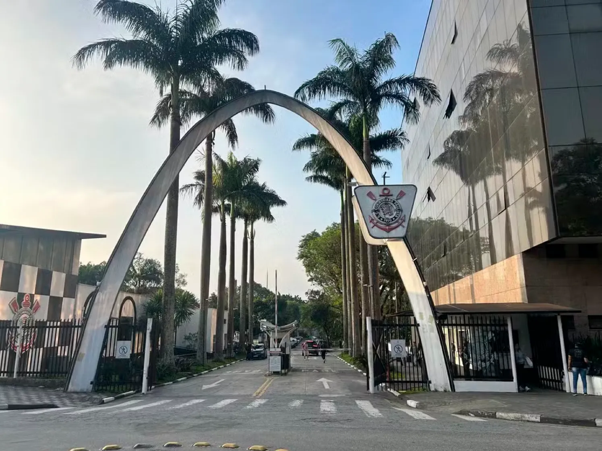

“Pelo corinthians eu faço tudo o que for preciso”

Plano de governo 2027-2029
O Corinthians precisa mudar seu modelo de gestão

Faltam para a eleição
02
Os pilares
da gestão
- 01
Profissionalização da gestão
Critérios técnicos para funções estratégicas, com metas, orçamento e avaliação de resultados.
- 02
Responsabilidade financeira
Despesas controladas, dívidas reorganizadas e compromissos com cobertura orçamentária.
- 03
Integridade
Prevenção de irregularidades, fiscalização independente, processos transparentes e apuração de denúncias.
- 04
Transparência
Prestação de contas periódica, informações acessíveis e acompanhamento das decisões administrativas.
- 05
Autonomia técnica do futebol
Menos interferência política nas decisões esportivas e fortalecimento das áreas profissionais.
- 06
Receitas recorrentes
Novas propriedades comerciais, patrocínios, produtos e experiências para a torcida.
03
Os primeiros
Dias
Os primeiros 100 dias: Diagnóstico, organização e prioridades
- Levantamento completo das dívidas e obrigações financeiras.
- Revisão de contratos, receitas e despesas.
- Análise dos projetos e investimentos em andamento.
- Diagnóstico das áreas de futebol, finanças, comercial e comunicação.
- Identificação de riscos administrativos e financeiros.
- Estudo de estrutura independente de integridade e prevenção à corrupção.
- Reorganização das responsabilidades dos departamentos.
Entrega
Diagnóstico documental com prioridades, informações passíveis de divulgação pública e encaminhamento aos órgãos competentes.
04
Responsabilidade financeira
Lei de Responsabilidade Financeira do Corinthians (LRFC)
Regras internas para estabelecer limites de despesas e controle orçamentário.
- Orçamento plurianual e limites de despesas por departamento.
- Fonte de receita correspondente para gastos e investimentos não previstos.
- Responsabilização dos dirigentes por despesas autorizadas em desacordo com as regras aprovadas.
- Revisão de contratos e renegociação das dívidas, considerando custos, prazos e garantias.
Investimentos compatíveis com a capacidade financeira do clube.
05
Integridade e
combate à corrupção
Estudar uma estrutura independente de integridade e prevenção à corrupção, com competências próprias e fiscalização efetiva.
- Prevenção de irregularidades e conflitos de interesses.
- Fortalecimento dos controles internos.
- Procedimentos documentados para contratações e pagamentos.
- Apuração independente de denúncias e suspeitas.
- Processos competitivos e critérios objetivos para escolher fornecedores.
- Registro das decisões administrativas e de seus responsáveis.
- Respeito ao devido processo e ao direito de defesa.
06 / Gestão profissional e transparência
O Corinthians
às claras
Profissionalização
- Funções estratégicas remuneradas preenchidas por critérios técnicos.
- Metas e indicadores por departamento.
- Responsabilidade por orçamento e prazos.
- Plano de Continuidade Administrativa para preservar projetos estratégicos.
Transparência
- Implantar o programa e criar o Portal de Transparência da Fiel.
- Divulgação periódica de receitas, despesas, dívidas e folha salarial.
- Prestação de contas da execução orçamentária.
- Informações aos órgãos de fiscalização.
Comunicação
- Reformular a Corinthians TV com programação própria de entrevistas, documentários, bastidores e conteúdos históricos.
- Ampliar a abertura dos treinamentos e das entrevistas no CT.
- Zona mista fixa na Neo Química Arena, respeitadas as regras das competições.
07
Futebol
profissional
Autonomia técnica e competitividade
Menor interferência política nas decisões esportivas, com controles financeiros e institucionais.
- Gestão com estrutura técnica e administrativa.
- Critérios técnicos e financeiros para contratações e renovações.
- Scouting e monitoramento de atletas, com tecnologia e dados na identificação de jogadores.
- Modernização da saúde, preparação física e performance.
- Prevenção de lesões e acompanhamento psicológico.
- Planejamento do elenco pelo custo integral das operações.

08 / Categorias de base
Fábrica
de craques
Formar, revelar e valorizar
Fonte de atletas para o profissional e de valorização do patrimônio esportivo.

- Metodologia integrada ao futebol profissional.
- Modernização de alojamentos, campos e estruturas médicas.
- Captação e observação de talentos fortalecidas, com dados aplicados à formação.
- Acompanhamento nutricional, psicológico e físico.
- Proximidade com as famílias e acompanhamento escolar.
- Preservação da participação do clube nos direitos econômicos dos atletas.
09 / Futebol feminino
As Brabas

das receitas geradas reinvestidas na própria modalidade
Autonomia
e estrutura
Planejamento e acompanhamento próprios para manter o protagonismo esportivo e ampliar a sustentabilidade da modalidade.
- Atuação comercial exclusiva, com profissional responsável por patrocínios, parceiros e metas específicas.
- Fortalecimento das categorias de base femininas.
- Fazendinha como casa oficial, com reformas e adequações para competições.
- Novos patrocinadores para financiar melhorias estruturais.
- Suporte nutricional, psicológico e familiar às atletas.
- Salários e premiações pagos em dia.
- Comunicação clara entre administração e elenco.
10
Marketing e
desenvolvimento
comercial
A força da marca Corinthians como fonte de receitas recorrentes.
- Fortalecer a estrutura comercial e a prospecção de negócios.
- Criar propriedades de patrocínio e valorizar os espaços da camisa.
- Ampliar parcerias e produtos licenciados.
- Novo processo competitivo para a gestão das lojas oficiais.
- Expandir a presença comercial para outros estados e desenvolver produtos e experiências para quem vive fora do Brasil.
- Internacionalizar a comunicação nas redes sociais.
- Integrar marketing, comunicação e comercial na valorização da marca.
- Desenvolver patrocínios e comercialização para a Corinthians TV.
11
Neo Química
Arena
Gestão especializada e revisão de contratos para uma operação esportiva e comercial durante todo o ano.

- Calendário de shows, eventos corporativos e feiras.
- Modernização e exploração comercial do estacionamento.
- Experiências premium e serviços de hospitalidade.
- Maior participação do Corinthians nas receitas de produtos e serviços.
- Circuito histórico e turístico, visitas guiadas e experiências ligadas à história do clube.
- Integração com iniciativas culturais e turísticas da Zona Leste.
- Demonstrativo próprio de receitas e despesas da operação.
Ampliar o uso e as receitas com eficiência operacional, preservando o calendário esportivo.
12
Parque São Jorge
e esportes amadores
Planejamento, orçamento e responsabilidades próprios para valorizar o patrimônio histórico, social e esportivo.

- Receitas e despesas do clube social com visibilidade específica.
- Gestão profissional dos esportes amadores, com responsáveis, orçamentos e calendários por modalidade.
- Recursos por leis de incentivo, CBC e patrocínios.
- Modernizar piscinas, quadras, campos e demais estruturas, com melhorias em vestiários, banheiros, estacionamento e acessibilidade.
- Eventos, torneios e atividades culturais.
- Escolinhas, atividades familiares e colônias de férias.
- Projetos de esporte social e paradesporto.
Valorizar os associados e ampliar a sustentabilidade das modalidades esportivas.
13
Transformação
digital e participação
Relacionamento com associados e torcedores como parte estratégica da administração.
- Reestruturar o Fiel Torcedor por processo competitivo para escolher operador especializado.
- Criar o Plano Internacional para quem vive fora do Brasil.
- Desenvolver o Fiel no Avião, condicionado à disponibilidade e à viabilidade operacional.
- Atendimento e ouvidoria permanentes, com prazos de resposta aos associados.
- Mais participação dos associados nas decisões sobre o Parque São Jorge.
- Diálogo institucional com torcidas organizadas.
- Uso de dados para aprimorar serviços e conhecer os públicos, respeitando a LGPD.
Um Corinthians
de Verdade
Planejamento, responsabilidade e capacidade de execução para colocar a instituição acima de interesses individuais.
Compromisso
com o futuro
- Recuperar a organização financeira e estabelecer regras permanentes de responsabilidade orçamentária.
- Implantar mecanismos de integridade, fiscalização e combate à corrupção.
- Fortalecer o futebol profissional, a base e o futebol feminino.
- Ampliar receitas e valorizar os ativos comerciais do Corinthians.
- Construir uma gestão transparente, profissional e comprometida com a Fiel.
Decisões responsáveis, respeito à história do clube e compromisso com as próximas gerações.
14
Responsabilidade
social e futuro
Um Corinthians comprometido com a sociedade
Projetos contínuos, parcerias e inclusão para fortalecer a função social do clube.
Ação social
Inclusão e respeito
Meio ambiente
Metas, indicadores e prestação de contas para as ações sociais, ambientais e de governança.